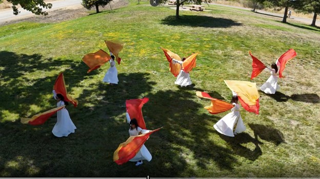
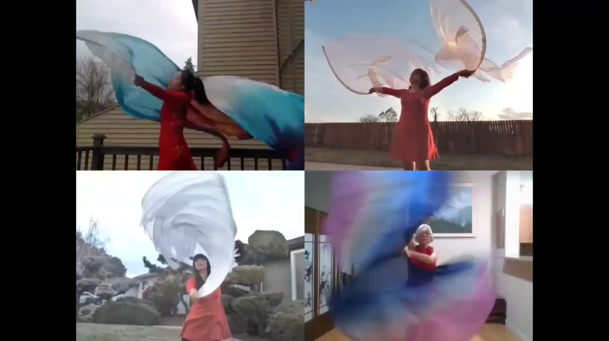

Worship · Prayer · Transformation
“And Moses built an altar and named it The LORD Is My Banner.” — Exodus 17:15
Wings of Shalom began in February 2021 during the COVID-19 pandemic as an online flag worship training class initiated by the Silicon Valley River of Life Christian Online Church.
In August 2022, Wings of Shalom became an independent teaching ministry dedicated to equipping believers in flag worship dance. What started as a small online learning community quickly grew into a place where believers could learn to express their worship through flag worship dance.
Since its founding, the ministry has been committed to training, inspiring, and raising up worshipers who desire to honor God through flags, movement, and heartfelt praise.
In 2023, Wings of Shalom expanded internationally with the launch of its first European training class. The ministry has steadily grown across nations, extending its reach to three continents and eight countries, and training over 250 students worldwide.
Through online and international classes, Wings of Shalom continues to equip believers to worship God with freedom, excellence, and unity—empowering a global community to glorify His name through flag worship dance.

From the very beginning, Wings of Shalom has faithfully followed God's guidance. We are grateful that He has led us like a pillar of cloud by day and a pillar of fire by night, guiding us through every milestone and season with His love and truth.
Wings of Shalom strives to follow God's leading, discern His heart, and live out His purposes with faith and obedience. This commitment shapes our vision for the future—to continue moving forward courageously under God's protection, filled with His grace and light.
From North America to Asia, Europe to Central America, students from around the world are learning and growing together through Wings of Shalom's programs.
Come worship with us
Join a class, explore our worship flags, or reach out — there's a place for you to lift a banner of praise.